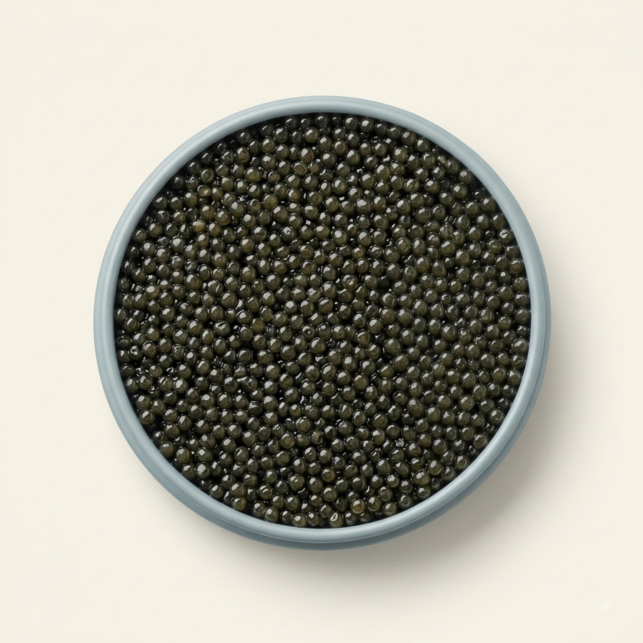

Le Caviar
Sevruga
Caractère
Le grain le plus petit, le plus dense. L'attaque est franche, iodée, presque saline avant de s'arrondir. La longueur est courte mais nette, sans retour amer.
Données
EspèceAcipenser stellatus
Calibre du grain2,0 – 2,4 mm
AffinageMalossol
Taux de sel≤ 3,5 %
MillésimeLot en cours
Grammages30 g · 50 g · 125 g · 500 g
Accords & service
Coquillage cru, agrumes en zeste léger. Sa salinité répond bien à l'acidité.